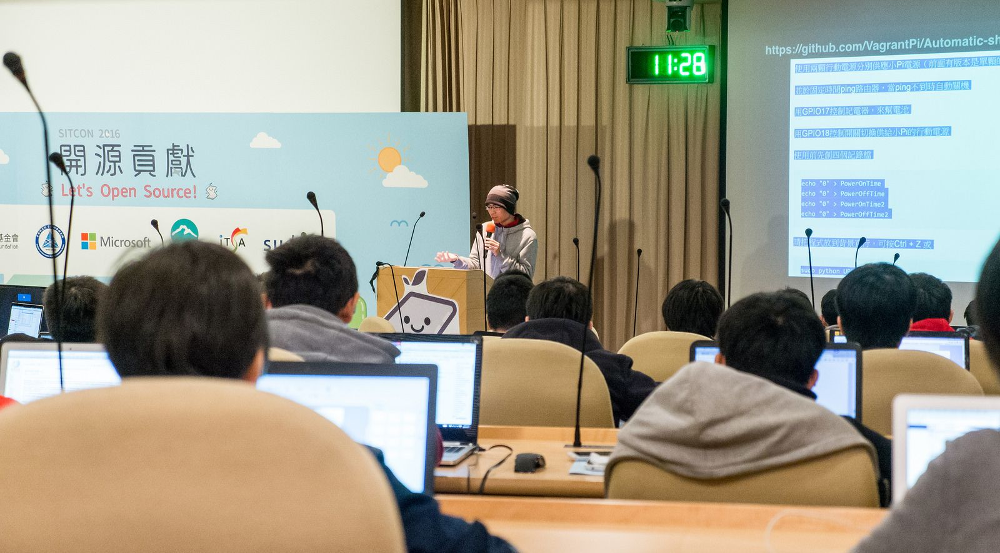
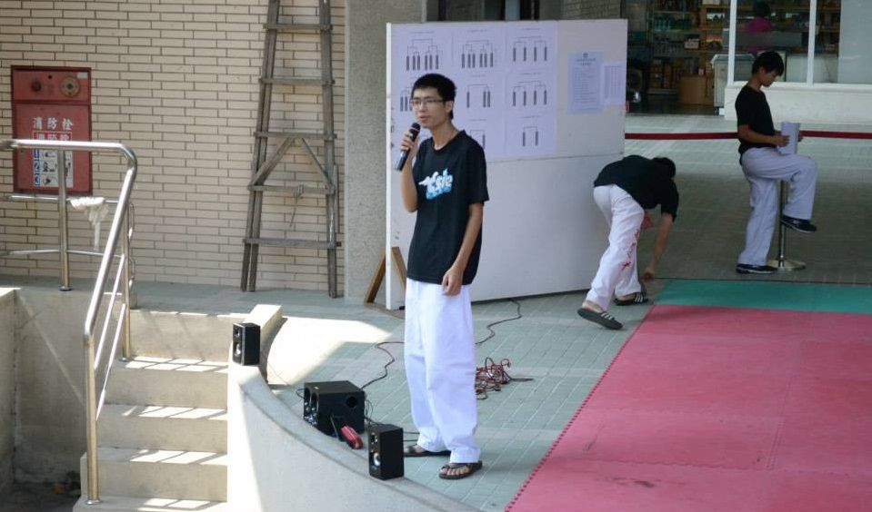
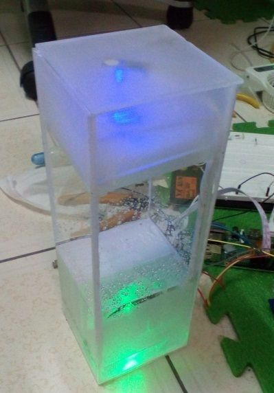

自小家住偏僻，所以電腦對我來說是個很神奇的東西，好奇心驅使的情況下，我對於駭客一詞抱持著無比的推崇，而高職時因為全國工科技藝競賽的關係，雖然因為些許失誤而與名次擦身而過，但我也因此愛上了Linux，黑視窗的方便性，滿足了我小時候的夢想，這是微軟的Cmd 無法給我的感受，乍看之下因為沒有圖形化介面，感覺做什麼事都充滿限制，但幾行指令間，我連 Kernel 都能改，Linux 完全改變了我對電腦的視野。
大學時，寫程式遇到了碰壁期，我不段摸索著我相信的那份「可能性」，不斷思考我畢業真的有工作嗎？我畢業能做什麼？這些問題讓我不段的反思。當時剛好看到了某些文章提到「衝出自己的舒適圈」，對於不斷思考卻苦無答案的我，決定是時候該出去走走了，當時因為一些誤解認識了 SITCON 這個社群。
社群內看到了也聽到了很多別的學校，資工人對於技術的一些看法與想法，也因此認識了幾位朋友。在我眼裡，大家都是求道者，而我也是，原本的大學裡，同學們都生活安逸，多學或是研究技術只是會被笑，他們最常講的就是「反正出社會就會學到了」。不過對好奇心很強的我來說，技術是有趣的， GEEK 對我來說是個目標，而我想換換環境，到有更多高手的地方去做交流學習。
就這樣，我四處的接觸這些求道者，從黑客松台灣到高雄前端，從 MOPCON 到 COSCUP ，我到處吸收知識，而在 2016 的 SITCON 年會上，我第一次當上了講師，雖說演講內容與質量沒有很高，但對我來說是最大的鼓勵，跟那次的年會主題一樣「開源、貢獻」，因為 SITCON ，我走出了碰壁期，所以帶著貢獻心投了搞，哪天我也希望有能力貢獻 Code 回 Linux Kernel。
而大學期間，因緣際會下，當上了跆拳道社社長，但因社團狀況不佳，就這樣開始了振興社團的任務，但試驗了很多方法，做了很多不一樣的嘗試，但無奈社團性質與大環境的關係，所以一直不見起色，就這樣一學年過去了，送走畢業的老社員後，我決定帶著所剩不多的社員放手一搏，排了個招生的表演，心想如果這種困境都讓我們救起來了，那未來遇到什麼問題應該都能解決，所以就在試了一遍。還好招生狀況不錯，於是在去年沒人接手的情況下，我又多當了一屆社長。
累積下來的經驗讓我對於學校公文還有辦理活動之類的都得心易手，但大環境依然，學校大型活動、系上活動運動系隊，接連而來，導致人員快速流失，結果回到了去年的狀況了。還好這時候一位大四老社員回歸了，抱著雙主修外加學校工讀的他說要來幫忙招生，而我們又再次的帶著為數不多社員們繼續努力著，也許在旁人來看我是個傻子，都要這麼忙了還幫社團，但看到這位更忙的朋友都義不容辭了，而且我相信他能為社團帶來新氣象，他是練武成癡的武者，他曾跟我說：「這是他要做一輩子的事」，原來他從小就開始練了，而且每天每天從未斷過，不經讓我思考，我能打Code一輩子嗎？看來他也是同道中人，追尋著自己的信仰，磨練自己的道，不過他不畏懼他人的眼光，這點讓我相當敬佩。人與人的相遇，真的很有趣，追求技術不過就是種態度，心態、堅持、自律，是我從他身上學到的。
在學期間做了很多東西，縣政府E化輔導地方社團的專案、研討會的影片DM製作、擔任帶領同學組成社群研究 Raspberry Pi 跟 Arduino 的小老師、從系計中成員到擔任 SA 、 校外實習的網頁專案…等，雖說沒有什麼特別大的專案或是很猛的專案，但也吸收了不少經驗跟知識，專題方面也是。設計了一套儲存Code的Server，並且可分享和直接在線上編譯，而這專題其實只是一整個專案的一小部分延伸而已，整個專案圍繞在程式語言課的教學輔助上，且讓教學更加靈活。本來一開始題目不是做教學網站系統的，就在我還沒確認前，參加了高雄前端社群的辦的WorkShop，在那認識了一位在下班時幫人做程式教學的人，而費用只需要請他吃一餐，聊天時他說了很多都對於程式教育的理想，也很喜歡與人的相識，而我被這份熱誠所感動了。而在那之後指導教授有提到他想要有人幫他做教學網站，所以我把題目定下來了，與其做些不知道自己在做什麼且做完就不會再用的專題，不如來做些真正能用且對於資訊教育有些許貢獻的專題。
常參加研討會與多看技術性文章的同時，漸漸地發現效能的重要性，以往打程式只是打得出來而已，後來發現，效能的差異、Code的質量可以天差地遠，不過在不段嘗試較好方法來實作專題時，發現時間越來越少了，而效能的優化像無底坑一樣，所以如何評估且規劃出最好的方法是目前最大的課題。實習也是如此，在教授引薦下接下了網頁相關的實習計畫，比起UI/UX的規劃，想辦法增快網頁效能所花的時間反而比較多，不過這專案時間壓力比較小，所以很多時間可以做各種嚐試。我想如果要繼續往上爬，那讀研究所事必須的，跟隨著教授學習如何更好的研究，是我接下來要做的。